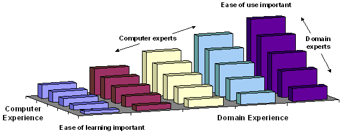
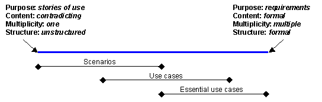

| Concept: User-Centered Design |
 |
|
What Is User-Centered Design?There is no clear consensus on what constitutes user-centered design. However, John Gould and his colleagues at IBM developed an approach in the 1980's called Design for Usability [GOU88] which encompasses most commonly-accepted definitions. It developed from practical experience on a number of interactive systems, most notably IBM's 1984 Olympic Messaging System [GOU87]. The approach has four main components as described below. Focus on UsersGould suggests that developers should decide who the users will be and to involve them at the earliest possible opportunity. He suggests a number of ways of becoming familiar with users, their tasks and requirements:
In the Rational Unified Process (RUP), workshops are used at several key stages, but these must be complemented by the kinds of activities Gould describes if an accurate picture is to be formed. (Part of the argument behind this is that people frequently describe what they do quite differently from how they do it. Commonly performed tasks and seemingly unimportant details such as placement of work or the existence of "mysterious" scraps of paper are often forgotten, or omitted because they are not "officially" part of the current process.) Integrated With DesignUsability tasks should be performed in parallel early in development. These tasks would include sketching the user interface and drafting the user guides or online help. Gould also makes the point that usability should be the responsibility of one group. An important feature of integrated design is that the overall approach - the framework - for detailed user-interface design is developed and tested at an early stage. This is an important difference between user-centered design and other purely incremental techniques. It ensures that incremental design carried out in later phases fits seamlessly into the framework and that the user interface is consistent in appearance, terminology and concept. Within the RUP, this framework can be established by using a domain model to ensure that all terminology and concepts that will appear in the user interface are known and understood within the business in general and with users in particular. (There will also be subsets of the domain model that will be relevant only to specific groups of users. Care should be taken to ensure that the domain model is organized so that these subsets can be easily identified.) As user-interface design progresses, many of the domain classes will be represented as user-interface elements. The user-interface elements, and the relationships between them, should be consistent with the domain model and should be represented consistently through all parts of the system under design. (This not only assists users, but also improves reuse of user-interface components.) Early User TestingEarly user testing means early storyboarding and the early development of low-fidelity prototypes. Hi-fidelity prototypes will follow later in the process. Storyboards can be used in conjunction with use cases to write concrete scenarios of use for the system under design. These can take the form narrative, illustrated narrative (using the user-interface mockups for illustration), Storyboards, walkthroughs (with users), and user-focus groups are approaches that may be unfamiliar to many software developers. However, they are clearly more cost effective than the discovery of inappropriate design or misunderstood requirements once implementation is under way. Iterative DesignObject-oriented development has become synonymous with an iterative process. Iterative design is well-suited to problems that need a refinement of understanding and have changing requirements. Not surprisingly, iterative design is a key component of user-centered design. This is partly due to the changing needs of users over time, but also the inherent complexity of producing design solutions that can deal with diverse needs. Note that in user-centered methods, iterative design takes place within an integrated framework. We deliberately avoid incremental development, outside of an agreed framework, that might lead to a "patchwork" solution. Why User-Centered Design?Meeting User NeedsInteractive systems rely on their ability to accommodate the needs of users for their success. This means not only identifying diverse user communities but also recognizing the range of skills, experience and preferences of individual users. While it is tempting for developers and managers to feel that they understand user needs, this is seldom the case in practice. Attention is frequently focused on how users ought to perform tasks rather than how they prefer to perform them. In many cases the issue of preference is much more than simply feeling in control, although that is an important issue in itself. Preference will also be determined by experience, ability and the context of use. These issues are considered sufficiently important to the design process to warrant an international standard, [ISO 13407], entitled human-centered design processes for interactive systems. The standard and related issues are discussed in general terms in the remainder of this page. User-Interface DesignUsers understand and interact with a system through its user interface. The concepts, images and terminology presented in the interface must be appropriate to users' needs. For example, a system that allows customers to buy their own tickets would be very different to one used professionally by ticket sales staff. The main differences are not in the requirements or even the detailed use cases, but the characteristics of the users and the environments in which the systems might operate. The user interface must also cater for a potentially wide range of experience along at least two dimensions, computer and domain experience, as shown in Figure 1 below. Computer experience includes not only general familiarity with computers, but also experience of the system under development. Users with little experience of either computers or the problem domain, in the near left corner of the figure, will require a substantially different approach in the user interface to expert users, shown here in the far right corner.
 Figure 1: The effects of computer and domain experience on ease of learning versus ease of use Beware that it is not a forgone conclusion that inexperienced users will become experts over time. A number of factors may conspire to prevent this, for example low frequency of use, low motivation or high complexity. Conversely some systems may have predominately expert users. Factors here might be training, high frequency of use or high motivation (job dependence). Some of these issues and their effects on user-interface design are shown in Table 1.
Table 1, Some factors affecting user-interface design Interactive systems must either be designed to cater for an appropriate range of user experience and circumstances, or steps must be taken to restrict the design universe. For instance, training can be used to reduce the requirement for ease of learning in a complex system. Alternatively a system might be reduced in its scope in order that it better meets the core requirements of its users (a suggestion made by Alan Cooper in his book The Inmates Are Running the Asylum [COO99]). Legislation and StandardsAs part of user-centered design, we need to consider the skills and physical attributes of users. These issues are now being increasingly embodied in legislation. This is mostly directed at accommodating users with disabilities. However, making systems accessible to a wider range of users is generally seen as benefiting the user community as a whole. The table below shows the relevant legislation and resources for many parts of the world:
Table 2a, Disability-related legislation by country, region or body Aside from legislation, user-centered design and user-interface design are increasingly becoming the subject of standardization as shown below.
Table 2b, ANSI and ISO user interface and user-centered design standards User-Centered Design in the RUPDeveloping systems appropriate to user needs means a significant effort in requirements analysis. In user-centered design, this effort is focused on end users. The Business Modeling discipline covers modeling of the business workers (for those inside the business) and business actors (for those outside the business). A substantial point of emphasis in User-Centered design is that we understand the requirements of the real people who will fill the roles described in the work products mentioned above. In particular, we must avoid designing hypothetical humans for whom it is convenient to design software systems. The work products describing users must be written only after substantial, first-hand contact with users. In user-centered design this first-hand contact is part of a process sometimes called contextual inquiry. Hugh Beyer and Karen Holtzblatt (in their book Contextual Design, [BEY98]) describe the premise of contextual inquiry as: "...go where the customer works, observe the customer as he or she works, and talk to the customer about the work." (Some concrete examples of this have already been listed under Focus on Users.) This approach is used not only to have a better understanding of system requirements, but also of the users themselves, their tasks and environments. Each have their own attributes and taken together are referred to as the context of use. They are detailed in the ISO standard for user-centered design, described below. Contexts of UseISO's Human-centered design processes for interactive systems [ISO13407] identifies the first step in design as understanding and specifying the context of use. The attributes suggested are:
Table 3: Context of use from ISO standard for user-centered design It is useful to split the user context into its two constituent parts (user type and role) and then to consider the relationships between all four contexts:
Figure 2: Relationships between contexts Figure 2 shows that every task is performed in a role taken by a user within an environment. These contexts correspond to the RUP work products as shown in Table 4.
Table 4, ISO user-centered design standard contexts and their the RUP work products Each of these contexts could have a significant impact on the design of an appropriate user interface. As a result we are faced with a potentially large number of permutations. Even for a small system, there may be 2 environments (e.g. office and customer site), 3 types of user (sales novice, sales expert and management) and 6 roles (telephone sales assistant, external sales representative, etc.). That means up to 36 potential variations per task, although the set of realistic combinations is usually much smaller. Clearly tasks must be described individually, but a single description is unlikely to be appropriate for all permutations. One approach is to factor the user and environment contexts into the role description. This is the solution adopted by Constantine and Lockwood [CON99]. It involves providing a separate "user role" for each significant permutation of role, user and environment, then naming the resulting user role with a descriptive phrase, rather that a simple noun. Compare, for example, the role "Customer" with the user roles "Casual Customer", "Web Customer", "Regular Customer" and "Advanced Customer". Each user role description includes details of the role itself plus its users (referred to as role incumbents) and environment. This approach can be adopted with the RUP by choosing actors that correspond to user roles. Scenarios, Use Cases, and Essential Use CasesThe terms scenarios, Use Cases and essential Use Cases have a confusing degree of overlap and are used in different design approaches to mean slightly different things. For example, within the RUP "scenario" means a Use-Case instance; simply a specific "path" through the possible basic and alternative flows. However, it is common to find user-centered and user-interface design methods describing scenarios as stories of use, containing substantially more detail than just the flow of events. While this additional information may be irrelevant in later design phases, it does form part of the understanding of users, tasks and environments. Consequently, scenarios may be used extensively (in Storyboarding and Role Playing) in the Business Modeling discipline, but the focus moves towards Use Cases in the Requirements discipline. Figure 3 shows the nature of this overlap. The scale at the top incorporates a number of different factors that tend to vary together. For example, as purpose moves more towards requirements, structure usually becomes more formal. Essential Use Cases appear to the right of generic Use Cases because user roles make them slightly more specific (see the preceding section) and they have a more formal structure.
 Figure 3: Overlap in concepts between scenarios and use cases in user-centered design The differences between system Use Cases and essential Use Cases are best illustrated by example. Table 5 shows a Use Case from Constantine and Lockwood's Software for Use [CON99]:
Table 5: Generic use case for getting cash from an ATM This example details the sequence of events between the actor and the system, with the vertical line between the two columns representing the user interface. Notice that while Constantine and Lockwood recommend this style for essential Use Cases, this particular Use Case is not an essential one. The reason is that it is based on the syntactic detail of the interaction. That is, how the interaction takes place. An essential Use Case focuses on what the interaction is about (called the semantics). Table 6 is the essential version of the interaction.
Table 6: Essential use case for getting cash from an ATM This Use Case captures the essence of the getting cash interaction. The User Action and System Response headings have been replaced by User Intention and System Responsibility to reflect the change in emphasis. Good interface design centers on user goals and intentions; these are often hidden in conventional Use Cases. Essential Use Cases are particularly useful in the following situations:
However, essential Use Cases do have their drawbacks. Perfectly straightforward Use Cases such as that in Table 5 can be subject to considerable debate when it comes to distilling their essence. For example, does inserting a card identify the customer or the account? In most existing ATMs, it is the later although Constantine and Lockwood have chosen to interpret this as identifying the customer. This may have been a deliberate decision in light of newer technology such as retina scanning and fingerprint identification, or it may have been an oversight. The consequences in this case is an additional choice that has to be made by customers who hold more than one account. Another difficulty that essential Use Cases present is that they are not as suitable for review with users and other stakeholders because of their abstract nature. Part of this problem stems from having to translate essential Use Cases back to a concrete form representing user actions. This can be done once a Design Model is available by writing scenarios that describe the interaction in concrete terms (similar in concept to a Use-Case Realization, although concerned with user-system interaction rather than internal object collaboration). In summary, building essential Use Cases may not a good idea in the following situations:
Essential Use Cases in the RUPThe RUP does not explicitly refer to essential Use Cases, but in the Task: Design the User Interface, essential Use Cases are used as a starting point, then developed and augmented with usability requirements to create Storyboards, as explained in Guideline: Storyboard. This means removing all design or current implementation detail so that only the semantics-the meaning of the interaction-remain. Then, as various design alternatives are explored, syntactic detail-how the interaction takes place-is added to the essential Use Case as a type of realization. (Each alternative design is, in effect, a realization of the same essential Use Case.)
Storyboards can then be used as input to the Task:
Prototype the User Interface to develop the User-Interface Prototype. |

© Copyright IBM Corp. 1987, 2006. All Rights Reserved. |